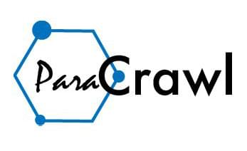
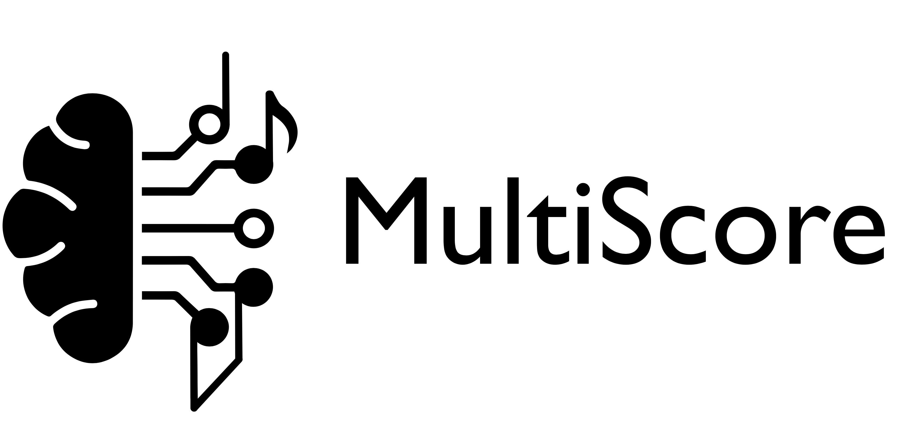
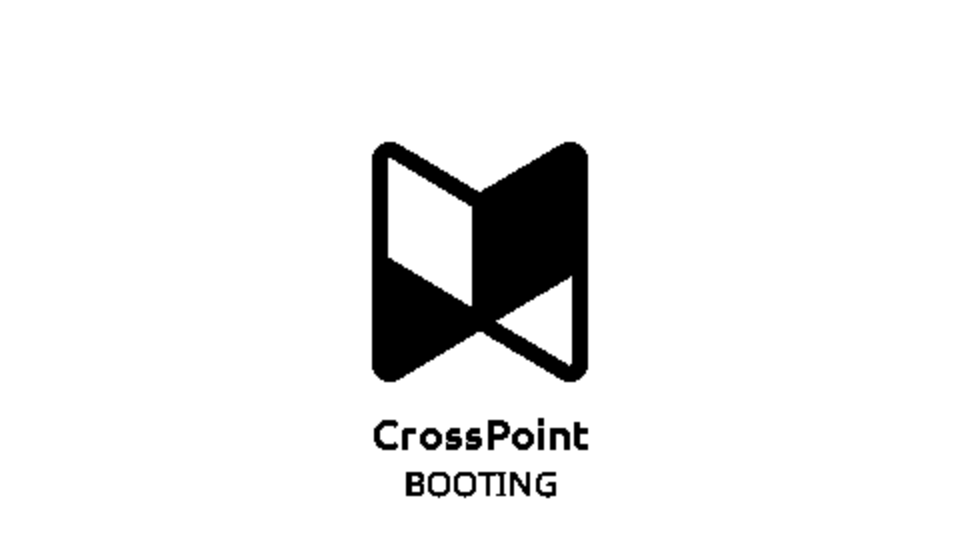
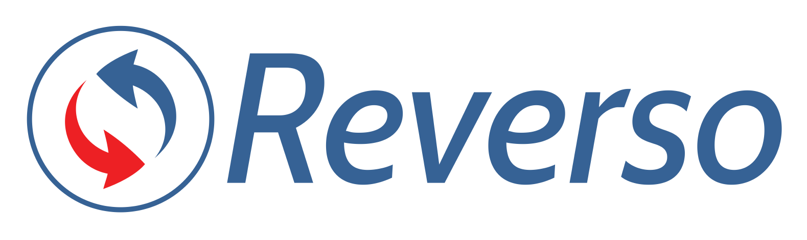

Multilingual Training Data Web Crawling ML Systems
I build multilingual data pipelines for machine learning: crawling the web, extracting usable text and making processing reliable at scale.
My work spans ParaCrawl and MaCoCu, production NLP, data tooling for music-transcription research and open-source systems.

Multilingual data engineering 2017–2023
I led engineering for multilingual web-data pipelines that processed over 1 PB of Common Crawl and other web data on HPC and cloud infrastructure, producing public corpora for machine translation and language-model research.
As a core developer and maintainer of Bitextor and co-developer of Monotextor, I worked on the path from crawling and WARC ingestion to text extraction, language identification, alignment and cleaning. Bitextor produces parallel corpora; Monotextor focuses on monolingual text.
Publications: ParaCrawl (ACL 2020) MaCoCu (EAMT 2023)
Data pipelines and platform integration
In CARAMEL, I contribute to the data platform supporting cardiovascular-prevention research, combining backend engineering with technical coordination across project partners. My work covers authenticated data access, ingestion workflows, interface definition and integration testing.
In CRYPTOTRACK, I develop Python search and scraping workflows that collect web information for cryptocurrency investigations, along with shared components for S3 ingestion, validation and logging. This connects source discovery and data collection with downstream NLP analysis.

Data annotation for music-transcription research
I built annotation tooling for MultiScore, a research project exploring optical and audio music transcription with deep learning. My contribution focused on preparing labelled music data for model training.
I developed mpvplaytime, a MuseScore plugin that inserts playback timestamps from MPV into a score. It lets annotators mark the correspondence between a musical performance and its written notation while listening.

C++ systems with tight memory limits
I maintain open-source firmware for Xteink e-readers, working on EPUB rendering, parsers, image decoding and regression testing.
For EPUB tables, I implemented a bounded row buffer and simple column layout. Complex or narrow rows fall back to a readable flow, preserving their content. The contribution documents memory and firmware comparisons, regression tests and device checks.
Other merged work includes grouping image buffers by lifetime and handling allocation failure, and fixing progressive JPEGs with separate component scans.
Explore the firmware
Production NLP and retrieval 2015–2017
At Prompsit, I contributed to the data and retrieval pipelines behind Reverso Context, improving retrieval of multilingual examples from aligned corpora.
The product served more than seven million queries per day.
Visit Reverso ContextI contribute to DataTrove, Hugging Face’s library for processing training data, focusing on reliable web-text ingestion and deduplication. My open pull requests include fixes, regression tests and improvements to interoperability between its Rust and Python pipelines.
WARC text decoding Deduplication metadata Rust/Python interoperability
I teach programming and software engineering at the University of Alicante.
Outside work, I make music and build retrocomputing hardware, including tools that connect Game Boys and MIDI.